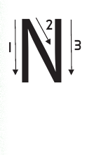

Lesson 11: Letter N
Lesson 11
Letter N

Trace or finger spell the letter N; explore a teacher-provided raised-line letter model before answering.

Lesson 11
Trace or finger spell the letter N; explore a teacher-provided raised-line letter model before answering.
